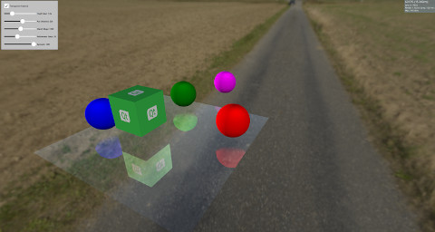

Qt Quick 3D - Screen Space Reflections Example
Demonstrates reflections in Qt Quick 3D.

This example demonstrates how to create reflections using Screen Space Reflections (SSR) on a model. SSR is a post-processing effect that can enhance the scene by adding reflections to it. The idea behind SSR is that the reflections can be calculated in Screen Space after the objects have been rendered. For each fragment, a ray is emitted from the camera to this fragment and then it is reflected around the fragment's normal. After that, we follow the reflected ray and determine whether it will hit an object or not. If an object was hit, then the fragment will reflect this object. There are situations where SSR will fail. For example, when the reflected ray hits an object behind the camera. Since the reflections are calculated in Screen Space after the objects have been rendered, no information about the color of the objects behind the camera is available. Although SSR has some drawbacks, it adds more realism to the scene.
This example implements SSR using Custom Materials that can be used on a Model, which will make it reflect its surroundings.
Model { source: "#Rectangle" scale: Qt.vector3d(5, 5, 5) eulerRotation.x: -90 eulerRotation.z: 180 position: Qt.vector3d(0.0, -50.0, 0.0) materials: ScreenSpaceReflections { depthBias: depthBiasSlider.value rayMaxDistance: distanceSlider.value marchSteps: marchSlider.value refinementSteps: refinementStepsSlider.value specular: specularSlider.value materialColor: materialColorCheckBox.checked ? "transparent" : "dimgray" } }
The rest of the scene has some objects which are either static or rotate above the surface to show the reflections.
Node { Model { source: "#Cube" eulerRotation.y: 0 scale: Qt.vector3d(1, 1, 1) position: Qt.vector3d(50.0, 40.0, 50.0) materials: DefaultMaterial { diffuseMap: Texture { source: "qt_logo_rect.png" } } } Node{ Model { source: "#Sphere" position: Qt.vector3d(-400.0, screenSpaceReflectionsView.modelHeight, 0.0) materials: DefaultMaterial { diffuseColor: "magenta" } } } Node{ eulerRotation.y: screenSpaceReflectionsView.modelRotation position.y: screenSpaceReflectionsView.modelHeight Model { source: "#Sphere" pivot: Qt.vector3d(0, 0.0, 0.0) position: Qt.vector3d(200.0, 0.0, 0.0) materials: DefaultMaterial { diffuseColor: "green" } } } Node{ eulerRotation.y: screenSpaceReflectionsView.modelRotation position.y: screenSpaceReflectionsView.modelHeight Model { source: "#Sphere" eulerRotation.y: 45 position: Qt.vector3d(0.0, 0.0, -200.0) materials: DefaultMaterial { diffuseColor: "blue" } } } Node{ eulerRotation.y: screenSpaceReflectionsView.modelRotation position.y: screenSpaceReflectionsView.modelHeight Model { source: "#Sphere" position: Qt.vector3d(0.0, 0.0, 200.0) materials: DefaultMaterial { diffuseColor: "red" } } }
Shader Code
Before diving into the shader's code, let's check some parameters that can be used to control the reflections.
depthBias | This parameter is used to check if the difference between the depth of the ray and object is within a certain threshold. |
rayMaxDistance | Controls how far is the ending point of the ray in View Space. |
marchSteps | Controls how many steps are used for computation. Increasing the number of steps decreases the amount of fragments the ray moves in each iteration and increases the quality. |
refinementSteps | After finding where the reflected ray hit the object, a refinement process is done to try and find the exact location of the hit. This parameter controls how many steps should be used. It can give better results when the marchSteps is small. |
specular | A value between 0 and 1 to control how much reflectivity the model has. |
materialColor | Gives color to the model. This color is mixed with the reflection color. |
The shader starts by getting a direction from the camera to the fragment, and then reflects it around the fragment's normal. The starting point and the ending point of the ray are calculated in View Space, and then these points are transformed into Screen Space. The benefit of marching the reflected ray in Screen Space is that it results in better quality. Moreover, the ray could cover a large distance in View Space but only a few fragments in Screen Space.
A vector pointing from the starting fragment to the ending fragment is calculated and divided by the marchSteps.
The rayMarch function is called afterward. It marches the ray every step in Screen Space, and then transforms it back to View Space. It also gets the object at this fragment using the DEPTH_TEXTURE of the scene. The difference between the ray's and object's depths is calculated and compared with the depthBias. If a hit is found, the refinementStep function is called.
void rayMarch(vec2 rayStepVector, vec2 size)
{
for(int i = 0; i < marchSteps; i++)
{
rayData.rayFragCurr += rayStepVector;
rayData.rayCoveredPart = length(rayData.rayFragCurr - rayData.rayFragStart) / length(rayData.rayFragEnd - rayData.rayFragStart);
rayData.rayCoveredPart = clamp(rayData.rayCoveredPart, 0.0, 1.0);
float rayDepth = rayViewDepthFromScreen(size);
rayData.objHitViewPos = viewPosFromScreen(rayData.rayFragCurr, size);
float deltaDepth = rayDepth - rayData.objHitViewPos.z;
if(deltaDepth > 0 && deltaDepth < depthBias)
{
rayData.hit = 1;
refinementStep(rayStepVector, size);
return;
}
}
}
The refinement step is the same as rayMarch, except it tries to find the exact position where the hit happens, so it advances the ray by half the step's distance every iteration.
void refinementStep(vec2 rayStepVector, vec2 size)
{
for(int i = 0; i < refinementSteps; i++)
{
rayData.rayCoveredPart = length(rayData.rayFragCurr - rayData.rayFragStart) / length(rayData.rayFragEnd - rayData.rayFragStart);
rayData.rayCoveredPart = clamp(rayData.rayCoveredPart, 0.0, 1.0);
float rayDepth = rayViewDepthFromScreen(size);
rayData.objHitViewPos = viewPosFromScreen(rayData.rayFragCurr, size);
float deltaDepth = rayDepth - rayData.objHitViewPos.z;
rayStepVector *= 0.5;
if(deltaDepth > 0 && deltaDepth < depthBias)
rayData.rayFragCurr -= rayStepVector;
else
rayData.rayFragCurr += rayStepVector;
}
}
The visibility of the reflection is set to the hit value, and after that some visibility checks are made. As mentioned before, SSR will fail if the reflected ray hits something behind the camera, so the visibility is faded out according to how much the reflected ray is heading toward the camera. The visibility is also faded out according to how far the hit object is from the starting point of the ray.
float visibility = rayData.hit;
/* Check if the ray hit an object behind the camera. This means information about the object can not be obtained from SCREEN_TEXTURE.
Start fading the visibility according to how much the reflected ray is moving toward the opposite direction of the camera */
visibility *= (1 - max(dot(-normalize(fragViewPos), reflected), 0));
/* Fade out visibility according how far is the hit object from the fragment */
visibility *= (1 - clamp(length(rayData.objHitViewPos - rayData.rayViewStart) / rayMaxDistance, 0, 1));
visibility = clamp(visibility, 0, 1);
Finally, the reflection color is calculated from the SCREEN_TEXTURE and mixed with the material color.
vec2 uv = rayData.rayFragCurr / size; uv = correctTextureCoordinates(uv); vec3 reflectionColor = texture(SCREEN_TEXTURE, uv).rgb; reflectionColor *= specular; vec3 mixedColor = mix(materialColor.rgb, reflectionColor, visibility); BASE_COLOR = vec4(mixedColor, materialColor.a);
Helper functions
There are some helper functions used in the shader's code. The correctTextureCoordinates function fixes the texture's coordinate according to the used Graphics API. This has to be done in the case of D3D11 or Metal. For more information, see CustomMaterial documentation.
vec2 correctTextureCoordinates(vec2 uv)
{
if(FRAMEBUFFER_Y_UP < 0 && NDC_Y_UP == 1)
uv.y = 1 - uv.y;
return uv;
}
The rayFragOutOfBound function checks if the ray is outside the screen after marching. In this case, no reflection color is used because no information is available for anything outside the screen.
bool rayFragOutOfBound(vec2 rayFrag, vec2 size)
{
if(rayFrag.x > size.x || rayFrag.y > size.y)
return true;
if(rayFrag.x < 0 || rayFrag.y < 0)
return true;
return false;
}
The viewPosFromScreen function gets the object's position in View Space by using the DEPTH_TEXTURE.
vec3 viewPosFromScreen(vec2 fragPos, vec2 size)
{
vec2 uv = fragPos / size;
vec2 texuv = correctTextureCoordinates(uv);
float depth = textureLod(DEPTH_TEXTURE, texuv, 0).r;
if(NEAR_CLIP_VALUE < 0.0)
depth = 2 * depth - 1.0;
vec3 ndc = vec3(2 * uv - 1, depth);
vec4 viewPos = INVERSE_PROJECTION_MATRIX * vec4(ndc, 1.0);
viewPos /= viewPos.w;
return viewPos.xyz;
}
The rayViewDepthFromScreen function gets the current position of the ray in View Space. This time the depth value is obtained by linearly interpolating the value between the starting point depth and ending point depth of the ray.
float rayViewDepthFromScreen(vec2 size)
{
vec2 uv = rayData.rayFragCurr / size;
float depth = mix(rayData.rayFragStartDepth, rayData.rayFragEndDepth, rayData.rayCoveredPart);
vec3 ndc = vec3(2 * uv - 1, depth);
vec4 viewPos = INVERSE_PROJECTION_MATRIX * vec4(ndc, 1.0);
viewPos /= viewPos.w;
return viewPos.z;
}
Files:
- screenspacereflections/CMakeLists.txt
- screenspacereflections/Example/ScreenSpaceReflections.qml
- screenspacereflections/Example/main.qml
- screenspacereflections/Example/material_screenspacereflections.frag
- screenspacereflections/Example/qmldir
- screenspacereflections/Example/screenspacereflections_qml_module_dir_map.qrc
- screenspacereflections/ScreenSpaceReflections.qml
- screenspacereflections/main.cpp
- screenspacereflections/main.qml
- screenspacereflections/material_screenspacereflections.frag
- screenspacereflections/materials.qrc
- screenspacereflections/qml.qrc
- screenspacereflections/screenspacereflections.pro
Images:
{kind=link}
{kind=link}